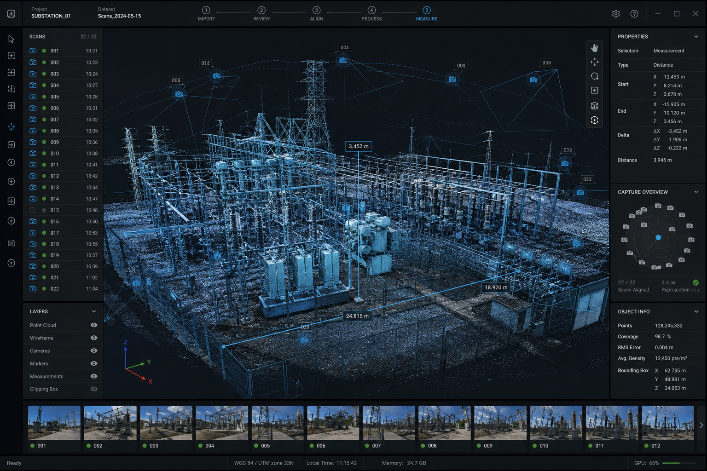

The operating system for autonomous flight.
Four integrated suites carry the mission from launch to insight — in the field, in the ops center, and in the browser you already have open.
MISSION COMMANDRun DFR from a single pane of glass.
Launch and manage every aircraft, answer multiple calls at once, and stream live video to patrol and command. CAD and NG911 integrated, evidence uploaded automatically.
- CAD-triggered launch. The nearest dock answers the call.
- Multi-mission. One operator, several aircraft, zero chaos.
- Native integrations. Dispatch, RTCC, body-cam and evidence ecosystems.
 FLEET OPS
FLEET OPSAutomate the routine. From anywhere.
Schedule patrols and scans, respond to alarms, and manage docks across every site in one browser view. No pilot on site, no mission missed.
- Scheduling engine. Recurring missions that just happen.
- Alarm hooks. VMS and sensor triggers launch instantly.
- Fleet health. Batteries, firmware and cycles at a glance.

3D CAPTUREPoint at the structure. Get the model.
Autonomous scan planning with full-coverage guarantees, onboard 2D maps and 3D models in real time, and clean export into the photogrammetry tools your engineers already trust.
- Coverage assurance. Gaps flagged and re-flown automatically.
- Edge processing. Models built onboard, mid-flight.
- Open pipeline. Standard formats, no lock-in.
The AI that does the flying.
Every aircraft in the fleet shares one autonomy core — 360° perception, real-time decision-making, and skills that compound with every software release.
Wayfinder
Fastest safe route to scene, computed onboard around terrain and geofences.
DarkSight
Zero-light obstacle avoidance with visible or IR illumination.
Shadow
Locks onto people and vehicles and keeps them in frame — even through brief occlusion.
Spatial engine
Understands the structure it's scanning and plans complete coverage on its own.
Plays well with your stack.
Dispatch, evidence, VMS, GIS, photogrammetry — 40+ integrations move AERIX data into the tools your teams already live in.
Watch the software fly the mission.
Get a demoFictional software suite for concept demonstration. Integration names are placeholders.